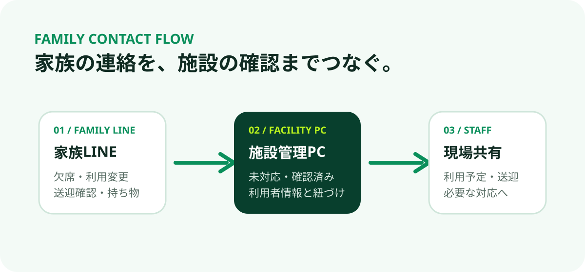
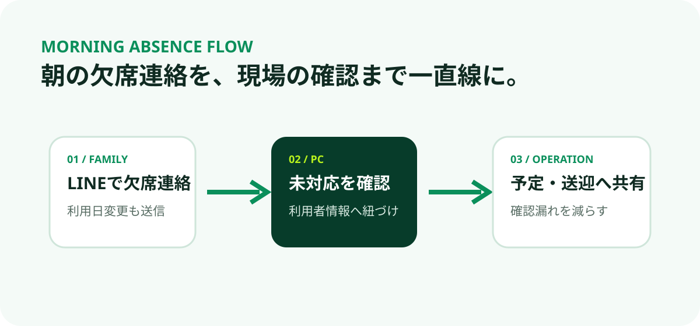
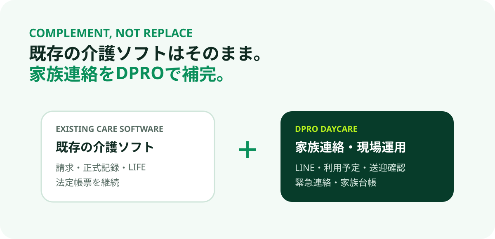
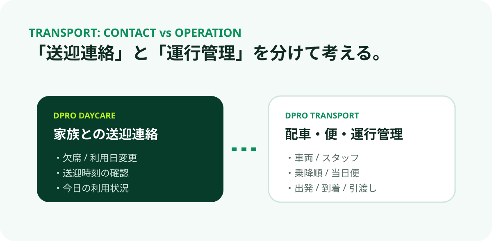

DPRO SEO / CARE & LINE GUIDE
介護・デイサービスの
LINE活用ガイド。
家族連絡、欠席、緊急一斉連絡、通所リハビリ、送迎連絡。現場の悩みから必要な仕組みを探せるガイドです。

CHOOSE BY ISSUE
困りごとから選ぶ、5つのガイド。
製品名を探している人だけでなく、「今の現場の困りごとをどう解決するか」を探している方へ向けたガイドです。
01 / FAMILY LINE
デイサービスの家族連絡をLINEで整理する方法
欠席・利用日変更・送迎確認・持ち物などを、電話や紙とどう使い分けるか整理します。

02 / EMERGENCY
介護施設の緊急一斉連絡をどう設計する？
災害・臨時休業・送迎遅延。未確認者への再送、次順位家族、自動段階配信まで整理します。

03 / ABSENCE
デイサービスの欠席連絡をLINEで受け付けるには
朝の電話集中を減らし、施設PCの未対応確認、利用予定・送迎共有へつなげます。

04 / DAY REHAB
通所リハビリの家族連絡をLINEで整理
既存の介護ソフトはそのまま。家族連絡・利用予定・重要連絡をDPROで補完します。

05 / TRANSPORT
デイサービスの送迎連絡と送迎管理の違い
家族への送迎連絡と、配車・便・車両・運行管理を分けて考えます。
LATEST BRUSHUP / EMERGENCY
災害時の連絡は、
「送った」で終わらせない。
今回のDPRO DAYCAREブラッシュアップでは、複数家族・連絡優先順位・緊急一斉連絡・未確認者への再送・次順位家族への追加送信・自動段階配信までつなげました。
01 / SEND緊急一斉連絡
02 / CHECK確認済み / 未確認
03 / NEXT次順位家族へ送信
04 / HISTORY段階配信まで履歴化

DPRO POSITION
既存の介護ソフトはそのまま。
家族連絡・緊急連絡・現場運用を補完。
既存の介護ソフト
- 介護保険請求
- 正式な介護記録
- LIFE・加算
- 法定帳票
DPRO DAYCARE
- 家族LINE連絡
- 利用者・家族台帳
- 利用予定・送迎確認
- 緊急・一斉連絡